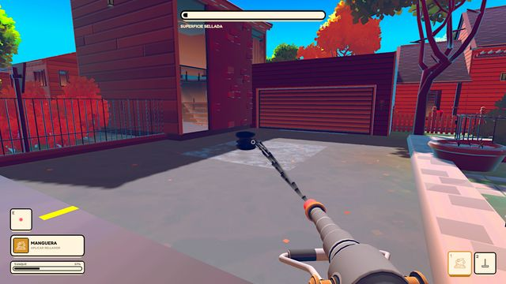
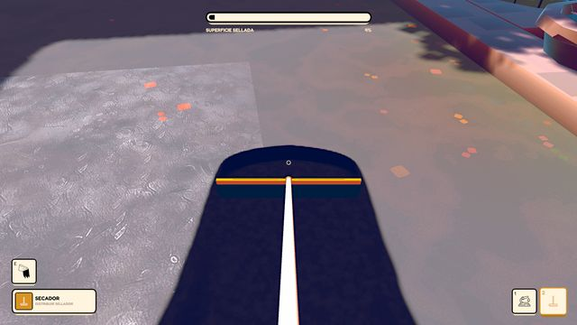
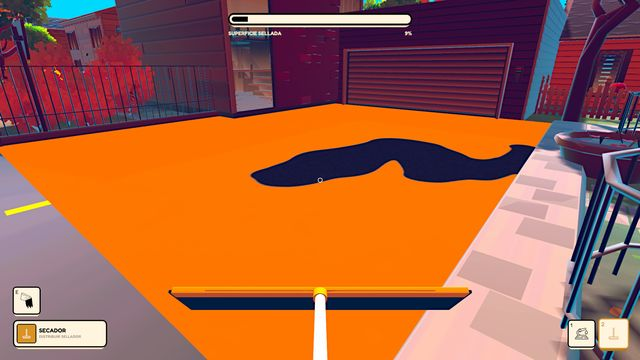
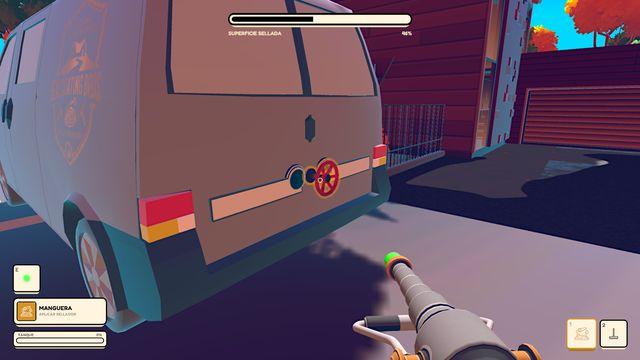
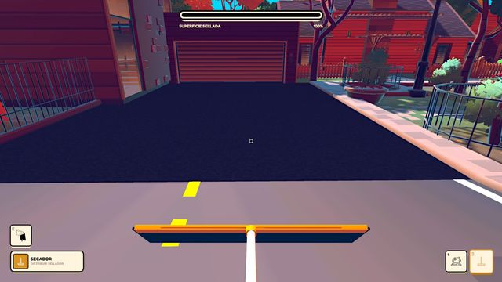
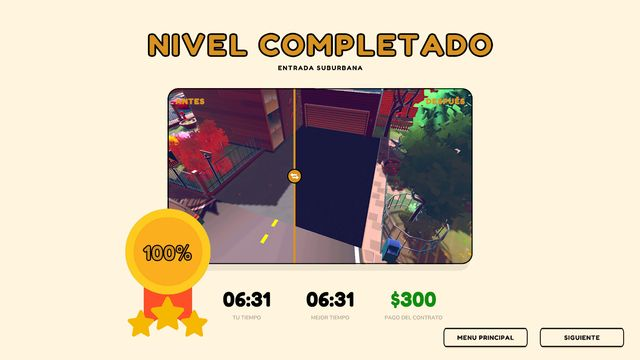

Sealcoating Simulator
A first-person cozy sim about sealcoating asphalt, in development for PC at Ace 87 Studios, the studio I co-founded in April 2026. Local and online co-op for up to four players, for now.
I own the game design and every playable level: each surface is its own problem of routing, order and pacing. I also designed the core loop and the progression that turn a repetitive trade into gameplay, tuned through playtest sessions.
Difficulty isn't tuned with numbers. The sealer behaves like a fluid: it flows, pools and settles, so no surface plays out the same way twice. What scales the challenge is the geometry of the space, the obstacles and the tank capacity.
In a cozy game the friction belongs in the task, never in finding your way. That's why uncovered areas are highlighted and refill stations show through walls: nobody wastes time wondering what's missing or where to go.
Simulador cozy en primera persona sobre sellar asfalto, en desarrollo para PC en Ace 87 Studios, el estudio que cofundé en abril de 2026. Cooperativo local y online para hasta cuatro jugadores, por ahora.
Estoy a cargo del diseño del juego y de todos los niveles jugables: cada superficie es un problema distinto de recorrido, orden y ritmo. También el core loop y la progresión de un oficio repetitivo convertido en gameplay, ajustados con sesiones de testeo.
La dificultad no se regula con números. El sellador se comporta como un fluido: fluye, se encharca y se asienta, así que ninguna superficie se resuelve dos veces igual. Lo que gradúa la exigencia es la geometría del espacio, los obstáculos y la capacidad del tanque.
En un cozy la fricción tiene que estar en la tarea, nunca en orientarse. Por eso las zonas sin cubrir se resaltan y las estaciones de recarga se ven a través de las paredes: nadie pierde tiempo preguntándose qué le falta ni adónde ir.